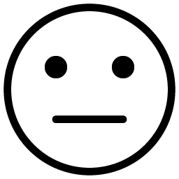

ノーマルモードへ
このアプリの
利用方法と注意点
- 日本語がランダムで表示されます。その表示された日本語を英語で答えてください。
- 答え方は、音声入力とテキスト入力の２種類あります。
- 音声入力の場合は、左にある「音声開始」ボタンを押し、マイクを許可にして発声してください。
- 入力が終わったら、「送信」ボタンを押してください。
- 合っていれば「〇」を、間違っていれば「✖」を表示すると共に、答えも表示され読み上げます。
- 解答したら、「次へ」ボタンを押してください。
- 3問正解したら終了し、終了すると右上に間違えた問題を表示し、読み上げます。